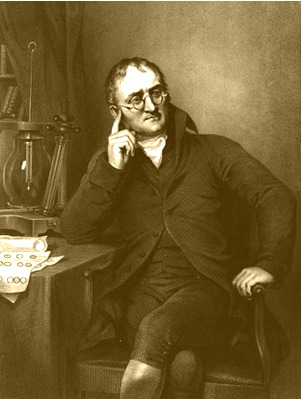
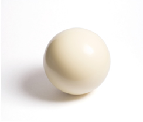

O Modelo Atômico de Dalton
Em 1803, o químico inglês John Dalton (1766-1844) retomou as ideias originais de Leucipo e Demócrito(de que a matéria seria formada por pequenas partículas indivisíveis que não poderiam ser destruídas). Depois de realizar vários experimentos para comprovar as suas hipóteses, ele formulou os seguintes postulados, isto é, proposições que não podem ser comprovadas, mas que são admitidas como verdadeiras e que servem como ponto de partida para a dedução ou conclusão de outras afirmações:
- A matéria seria formada por pequenas partículas esféricas, maciças (algo que não é oco, mas que é compacto) e indivisíveis, denominadas átomos;
- A matéria seria descontínua, pois entre um átomo e outro haveria espaços vazios;
- Um elemento químico seria formado por um conjunto de átomos de mesmas massas, tamanhos e propriedades;
- Elementos químicos diferentes seriam formados por átomos que teriam massas, tamanhos e propriedades diferentes;
- A combinação entre átomos diferentes, em uma proporção de números inteiros, formariam substâncias diferentes;
- Uma substância composta seria formada por espécies químicas de diferentes elementos com quantidade fixa de cada um deles. Dalton deu o nome “átomos compostos” a essas espécies;
- Os “átomos compostos” seriam formados por um pequeno número de “átomos simples”;
- Um átomo não poderia ser destruído; em uma reação química, eles apenas se rearranjariam para formar novas substâncias.
Para explicar sua hipótese, Dalton elaborou um modelo, já que os átomos não podiam ser vistos. Os modelos não são a realidade, mas uma representação da natureza, uma imagem mental construída a fim de explicar uma teoria a respeito de algum fenômeno que não pode ser visualizado. Um modelo adequado torna possível que se compreenda melhor a natureza e que até mesmo se faça previsões sobre o fenômeno estudado.
Esse modelo, hoje chamado de modelo atômico de Dalton, era que o átomo seria semelhante a uma bola de bilhar, esférica, maciça e indivisível:
Para melhor representar a sua teoria atômica, Dalton também substituiu os antigos símbolos que eram usados pelos alquimistas para representar o que eles acreditavam ser elementos químicos por símbolos mais apropriados, até porque alguns elementos descobertos não eram conhecidos pelos alquimistas.
Ele propôs uma série de círculos com linhas, pontos ou letras no meio que representassem cada elemento químico: